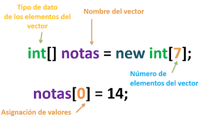
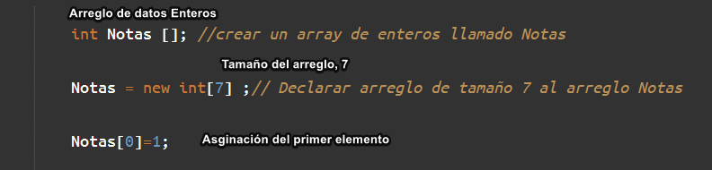

10 Arreglos
Un arreglo es una estructura de datos que permite almacenar un conjunto de elementos del mismo tipo, organizados de manera contigua en memoria. Cada elemento en el arreglo puede accederse mediante un índice, comenzando desde 0.

10.0.0.1 Características Principales de los Arreglos
Tipo Uniforme: Todos los elementos deben ser del mismo tipo (por ejemplo, todos enteros o todos cadenas).
Índices: Los elementos se identifican por su posición (índice) dentro del arreglo.
Tamaño Fijo: Los arreglos estáticos tienen un tamaño definido en el momento de su creación.
Acceso Directo: Los elementos se pueden acceder directamente usando su índice.
10.0.1 Arreglos Estáticos y Dinámicos
10.0.1.1 Arreglos Estáticos
Definición: Tienen un tamaño fijo que se debe especificar en el momento de la creación.
Ventajas: Simplicidad, bajo consumo de memoria.
Desventajas: No se pueden redimensionar una vez creados.
Ejemplo:
public class ArregloEstatico {
public static void main(String[] args) {
int[] numeros = new int[5]; // Arreglo estático de tamaño 5
numeros[0] = 10;
numeros[1] = 20;
for (int i = 0; i < numeros.length; i++) {
System.out.println("Elemento en posición " + i + ": " + numeros[i]);
}
}
}10.0.1.2 Arreglos Dinámicos
Definición: Pueden cambiar su tamaño durante la ejecución. No son arreglos directos en Java, pero pueden simularse con clases como
ArrayList.Ventajas: Flexibilidad para añadir o eliminar elementos.
Desventajas: Uso de más memoria y procesamiento.
Ejemplo:
import java.util.ArrayList;
public class ArregloDinamico {
public static void main(String[] args) {
ArrayList<Integer> numeros = new ArrayList<>();
numeros.add(10); // Agregar elementos dinámicamente
numeros.add(20);
for (int numero : numeros) {
System.out.println("Elemento: " + numero);
}
}
}ELEMENTOS DE UN ARREGLO.
Los arreglos se pueden realizar de diversas maneras.
1)
public class EjemploArreglo {
public static void main(String[] args) {
int[] calificaciones = {85, 90, 78, 92, 88}; // Arreglo de enteros
}
}2)

public class Main
{
public static void main(String[] args) {
int[] notas = new int[7]; // Declarar arreglo de tamaño 7
notas[0] = 11; // Asignar valor al primer elemento
}
}3

10.0.2 Acceso e Iteración en Arreglos
Para obtener información de un arreglo en Java, podemos acceder a sus elementos de forma individual utilizando su índice o recorrer todos los elementos mediante un bucle.
10.0.2.1 Acceso Individual
En un arreglo, los elementos están numerados desde el índice 0. Por ejemplo, en el siguiente arreglo:
int[] numeros = {1, 2, 3, 4, 5, 6};numeros[0]contiene el valor1.numeros[3]contiene el valor4.
Este método es útil cuando queremos acceder a un elemento específico del arreglo.
10.0.2.2 Recorrido Mediante Iteración
Otra manera de trabajar con arreglos es recorriéndolos para acceder a cada uno de sus elementos. Esto se logra utilizando bucles como for o while. Esto es especialmente útil si queremos realizar operaciones sobre todos los elementos del arreglo.
Para iterar un arreglo necesitamos dos valores clave:
Origen: El índice inicial del recorrido (generalmente
0).Final: El límite del recorrido, que podemos determinar con
nombre_arreglo.length. Este método devuelve la cantidad de elementos en el arreglo.
int[] numeros = {10, 20, 30, 40, 50}; // Arreglo de 5 elementos
for (int i = 0; i < numeros.length; i++) {
System.out.println("Elemento en posición " + i + ": " + numeros[i]);
}la salida será
Elemento en posición 0: 10
Elemento en posición 1: 20
Elemento en posición 2: 30
Elemento en posición 3: 40
Elemento en posición 4: 50
10.0.2.3 Uso de una Longitud Fija
También podemos recorrer el arreglo con un valor de longitud fijo si sabemos cuántos elementos contiene. Aunque menos flexible, este método es útil para arreglos cuyo tamaño no cambia.
Ejemplo Manual:
int[] numeros = {10, 20, 30, 40, 50}; // Arreglo de 5 elementos
for (int i = 0; i < 5; i++) {
System.out.println("Elemento en posición " + i + ": " + numeros[i]);
}10.0.2.4 Diferencia Entre Longitud Fija y .length
Con
.length: El código se adapta automáticamente al tamaño del arreglo, ideal para arreglos dinámicos.Con longitud fija: Es menos flexible, y cualquier cambio en el tamaño del arreglo requiere actualizar el código manualmente.
10.0.2.5 Operaciones en los arrays (CRUD)
El término CRUD se refiere a las operaciones básicas que se pueden realizar sobre una estructura de datos:
Create (Crear): Añadir elementos al arreglo.
Read (Leer): Acceder y leer los elementos del arreglo.
Update (Actualizar): Modificar los valores de los elementos del arreglo.
Delete (Eliminar): Quitar elementos del arreglo.
En Java, trabajar con CRUD en arreglos tiene ciertas limitaciones, ya que los arreglos tienen un tamaño fijo. A continuación, se muestran ejemplos básicos de cómo implementar estas operaciones
10.0.2.6 Crear
Crear un arreglo y asignar valores.
int[] numerosEstaticos = new int[5]; // Arreglo de tamaño 5
numerosEstaticos[0] = 10;
numerosEstaticos[1] = 20;
numerosEstaticos[2] = 30;
numerosEstaticos[3] = 40;
numerosEstaticos[4] = 50;
String[] nombresEstaticos = {"Ana", "Luis", "María"}; // Crear un arreglo estático de Stringsimport java.util.ArrayList;
ArrayList<Integer> numerosDinamicos = new ArrayList<>();
numerosDinamicos.add(10); // Agregar elementos
numerosDinamicos.add(20);
numerosDinamicos.add(30);
numerosDinamicos.add(40);
numerosDinamicos.add(50);
ArrayList<String> nombresDinamicos = new ArrayList<>();
nombresDinamicos.add("Ana");
nombresDinamicos.add("Luis");
nombresDinamicos.add("María");10.0.2.7 Leer
Recorrer un arreglo para mostrar sus elementos
utilizando for
for (int i = 0; i < numerosEstaticos.length; i++) {
System.out.println("Número en posición " + i + ": " + numerosEstaticos[i]);
}utilizando for each
for (int numero : numerosDinamicos) {
System.out.println("Número: " + numero);
}10.0.2.8 Actualizar o Modificar
Modificar un elemento por índice.
int[] numerosEstaticos = new int[3]; // Crear un arreglo estático de enteros
numerosEstaticos[0] = 10;
numerosEstaticos[1] = 20;
numerosEstaticos[1] = 25; // Cambiar el valor en la posición 1
System.out.println("Número actualizado: " + numerosEstaticos[1]);import java.util.ArrayList;
ArrayList<Integer> numerosDinamicos = new ArrayList<>();
numerosDinamicos.add(10); // Agregar elementos
numerosDinamicos.add(20);
numerosDinamicos.add(30);
numerosDinamicos.add(40);
numerosDinamicos.add(50);
numerosDinamicos.set(1, 25); // Cambiar el valor en la posición 1
System.out.println("Número actualizado: " + numerosDinamicos.get(1));10.0.2.9 Eliminar
10.0.2.10 Arreglo Estático
No es posible eliminar directamente, pero puedes sobrescribir con un valor nulo o crear un nuevo arreglo.
numerosEstaticos[1] = 0; // Sobrescribir el valor en la posición 1
System.out.println("Número en posición 1 eliminado: " + numerosEstaticos[1]);
nombresEstaticos[1] = null; // Sobrescribir con null
System.out.println("Nombre en posición 1 eliminado: " + nombresEstaticos[1]);10.0.2.11 Arreglo Dinámico
Usar el método remove para eliminar un elemento.
numerosDinamicos.remove(1); // Eliminar el elemento en la posición 1
System.out.println("ArrayList después de eliminar: " + numerosDinamicos);
nombresDinamicos.remove(1); // Eliminar el elemento en la posición 1
System.out.println("ArrayList después de eliminar: " + nombresDinamicos);Ejemplo completo
import java.util.ArrayList;
public class CRUDExample {
public static void main(String[] args) {
// Crear (Create)
int[] numerosEstaticos = {10, 20, 30};
ArrayList<String> nombresDinamicos = new ArrayList<>();
nombresDinamicos.add("Ana");
nombresDinamicos.add("Luis");
nombresDinamicos.add("María");
// Leer (Read)
System.out.println("Arreglo Estático:");
for (int i = 0; i < numerosEstaticos.length; i++) {
System.out.println("Número: " + numerosEstaticos[i]);
}
System.out.println("\nArreglo Dinámico:");
for (String nombre : nombresDinamicos) {
System.out.println("Nombre: " + nombre);
}
// Actualizar (Update)
numerosEstaticos[1] = 25; // Actualizar arreglo estático
nombresDinamicos.set(1, "Carlos"); // Actualizar ArrayList
System.out.println("\nActualizado:");
System.out.println("Número estático en posición 1: " + numerosEstaticos[1]);
System.out.println("Nombre dinámico en posición 1: " + nombresDinamicos.get(1));
// Eliminar (Delete)
nombresDinamicos.remove(1); // Eliminar del ArrayList
System.out.println("\nDespués de eliminar:");
for (String nombre : nombresDinamicos) {
System.out.println("Nombre: " + nombre);
}
}
}Ejemplo Práctico
Login
import java.util.Scanner;
public class LoginArray {
public static void main(String[] args) {
// Arreglos para usuarios y contraseñas
String[] usuarios = {"admin", "usuario1", "usuario2"};
String[] contraseñas = {"admin123", "clave1", "clave2"};
// Variables para capturar el login
Scanner scanner = new Scanner(System.in);
System.out.print("Ingrese su usuario: ");
String usuarioIngresado = scanner.nextLine();
System.out.print("Ingrese su contraseña: ");
String contraseñaIngresada = scanner.nextLine();
// Validar el login
boolean accesoPermitido = false;
for (int i = 0; i < usuarios.length; i++) {
if (usuarios[i].equals(usuarioIngresado) && contraseñas[i].equals(contraseñaIngresada)) {
accesoPermitido = true;
break;
}
}
// Mostrar resultado
if (accesoPermitido) {
System.out.println("¡Acceso permitido! Bienvenido, " + usuarioIngresado);
} else {
System.out.println("Usuario o contraseña incorrectos. Inténtelo de nuevo.");
}
// Cerrar el Scanner
scanner.close();
}
}10.0.3 Introducción a los Arreglos de Objetos
En Java, un arreglo de objetos es una estructura que almacena múltiples instancias de una clase en una única colección. A diferencia de los arreglos de tipos primitivos (como int o double), un arreglo de objetos contiene referencias a instancias de una clase personalizada, lo que permite organizar y manipular datos más complejos.
Por ejemplo, si trabajas con un objeto Persona que tiene atributos como nombre, edad y correo, puedes usar un arreglo para almacenar múltiples personas y acceder a sus datos de manera estructurada.
10.0.4 Características de los Arreglos de Objetos
Capacidad para Almacenar Múltiples Instancias: Permiten trabajar con un grupo de objetos relacionados.
Homogeneidad: Todos los elementos del arreglo deben ser del mismo tipo (la misma clase).
Acceso Mediante Índices: Los objetos en el arreglo se acceden a través de índices, comenzando desde
0.
10.0.5 Ejemplo: Objeto Persona con 3 Atributos
10.0.5.1 Clase Persona
La clase Persona tiene los atributos nombre, edad y correo.
Código:
class Persona {
// Atributos públicos
public String nombre;
public int edad;
public String correo;
// Constructor
public Persona(String nombre, int edad, String correo) {
this.nombre = nombre;
this.edad = edad;
this.correo = correo;
}
// Método para mostrar información de la persona
public void mostrarInformacion() {
System.out.println("Nombre: " + nombre + ", Edad: " + edad + ", Correo: " + correo);
}
}public class Main {
public static void main(String[] args) {
// Crear un arreglo de objetos Persona
Persona[] personas = new Persona[3];
// Inicializar los objetos dentro del arreglo
personas[0] = new Persona("Ana", 25, "ana@example.com");
personas[1] = new Persona("Luis", 30, "luis@example.com");
personas[2] = new Persona("María", 22, "maria@example.com");
// Recorrer el arreglo y mostrar la información de cada Persona
for (int i = 0; i < personas.length; i++) {
personas[i].mostrarInformacion();
}
// Modificar un atributo directamente
personas[1].nombre = "Luis Alberto";
personas[1].edad = 31;
personas[1].correo = "luis.alberto@example.com";
System.out.println("\nInformación actualizada:");
personas[1].mostrarInformacion();
}
}import java.util.ArrayList;
public class Main {
public static void main(String[] args) {
// Crear un ArrayList dinámico de objetos Persona
ArrayList<Persona> personas = new ArrayList<>();
// Agregar objetos Persona al ArrayList
personas.add(new Persona("Ana", 25, "ana@example.com"));
personas.add(new Persona("Luis", 30, "luis@example.com"));
personas.add(new Persona("María", 22, "maria@example.com"));
// Recorrer el ArrayList y mostrar la información de cada Persona
for (Persona persona : personas) {
persona.mostrarInformacion();
}
// Modificar un objeto directamente en el ArrayList
personas.get(1).nombre = "Luis Alberto";
personas.get(1).edad = 31;
personas.get(1).correo = "luis.alberto@example.com";
System.out.println("\nInformación actualizada:");
personas.get(1).mostrarInformacion();
// Eliminar un objeto del ArrayList
personas.remove(0);
System.out.println("\nLista después de eliminar a Ana:");
for (Persona persona : personas) {
persona.mostrarInformacion();
}
}
}